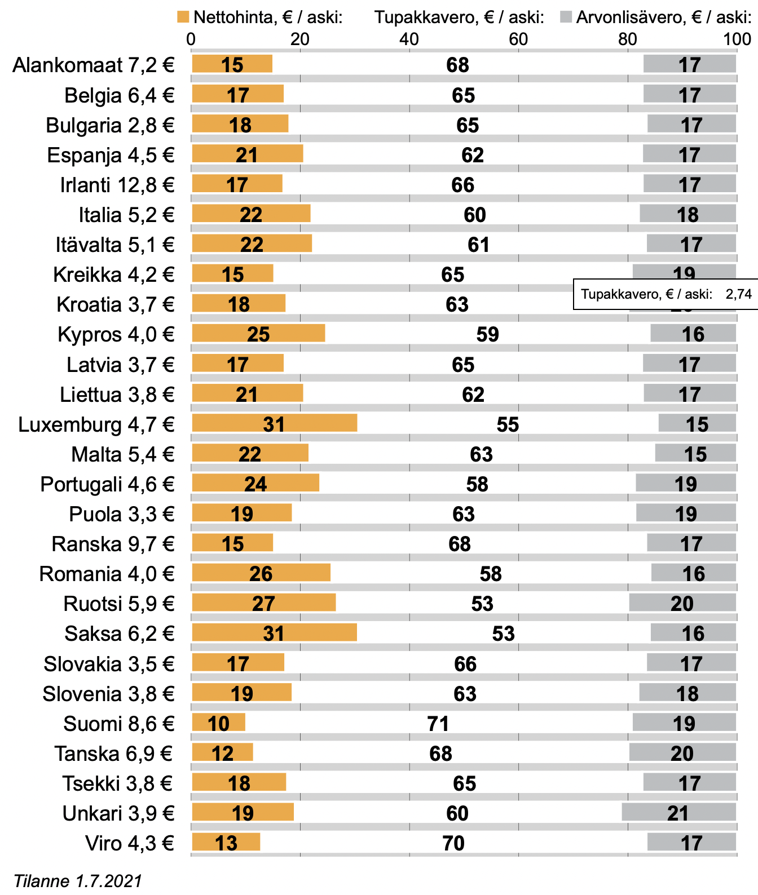

Päätoimittajalta
Joni Hammar
10.5.2023
Kirjoitettu
10.5.2023
Lukuaika
5min
Savukkeiden alueellinen eroavaisuus
Ulkomaanmatkalle lähtiessään voi huomata tuttujen tuotteiden - kuten kokiksen - maistuvan ulkomailla hieman erilaiselta. Tämä makuaistimus ei kuitenkaan ole pelkkää matkan hurmetta tai mielikuvituksen tuotetta, vaan suurienkin yritysten tuotteissa on alueellista vaihtelua reseptin suhteen. Savukkeet eivät ole mikään poikkeus alueellisesta vaihtelusta puhuttaessa, ja amerikkalainen savuke onkin tunnetusti tuhti, mutta jopa Euroopan maiden välillä on laadullista vaihtelua saman brändin alla myytävissä savukkeissa. Mistä vaihtelu johtuu, ja miksi erot ovat suuria niinkin pienillä välimatkoilla?
Vaikka EU:lla on yhteiset linjat tupakkapolitiikassan on tupakan verotus on kovasti maakohtaisesti vaihtelevaa. Veron määrä loppupeleissä ratkaiseva todellisen hinnan ja laadun. Yleisesti ottaen tupakan verotus on kasvava tulojen lähde valtioille, vaikka tupakoinnin yleinen suosio ole länsimaissa kasvamaan päin. Tupakkaa siis verotetaan yhä kovemmin, millä on kaksi epämiellyttävää ominaisuutta kuluttajalle: savukkeen hinta kasvaa ja sen laatu heikkenee.
Kuvaajassa 1 alla on eritelty tupakka-askin hinnan osaset EU maittain: nettohinta, tupakkavero ja alv oranssilla valkealla ja harmaalla. Vaikka kuvaajassa ei ole suhteutettu askin hintaa elintasoon – eli ei voida päätellä kuinka suuren loven se todella tekee kansalaisen kukkaroon – voidaan siitä päätellä Euroopan rapaisimmat savukkeet. Euroopan halvin savuke on euromääräisesti Bulgariassa, mutta sekään ei vielä tarkoita bulgarialaisen tupakan olevan erityisen huonoa, saati yksioikoisen halpaa bulgarialaisille. Bulgarialaisen tupakan hintaan vaikuttaa elintason lisäksi se seikka, että Bulgaria on tupakan tuottajamaa. Kun tuotanto on jokseenkin paikallista ja ketjussa on vähemmän välikäsiä, voidaan päästä halpaan hintaan ilman sikuria savukkeessa."
"Suomessa nautitaan Euroopan lokaisimpia savukkeita."
Virossa voidaan todeta askitupakan olevan verottomalta hinnaltaan Bulgarian jälkeen kuvaajan halvin, kun taas Brittiläisestä tupakoinnista voidaan huomata askin verraten kova hinta, mikä puolestaan heijastelee maan laittoman tupakan kauppaan. Iso-Britanniassa tupakan laiton kauppa on äitynyt todelliseksi ongelmaksi, jonka kustannusten on arvioitu maksavan veronmaksajille 2,2 miljardia vuosittain. Valitettavaa on myös, että moinen politiikka johtaa rikollisuuden kasvamiseen, sillä veromiljardit joutuvatkin parempiin suihin kuin valtiolle. Sillä mitä rikollinen tekee pääomallaan ja mitä valtio tekee pääomallaan, lienee jonkinmoinen ero.
Suomessa puolestaan nautitaan Euroopan kitkerimpiä savukkeita - ainakin mitä veroihin tulee - sillä tupakan veroprosentti on päätähuimaavat 91%. Veroprosentin ja laatukysymyksen konkretisoimiseksi voidaan esittää ajatusleikki: jos ruotsalainen aski – nettohinnaltaan 1.74€ - myytäisiin Suomen veroprosentilla 91, olisi sen hinta 19,65€. Minkälaista lokaa mahtaakaan suomalainen savuke pitää sisällään, kun nettohinta ajetaan 68 senttiin! Suomalaisella elintasolla moisella rahasummalla ei paljoa saa.
Keskimääräisesti suurin veroton hinta askille taas on Irlannissa, (2,17) mikä saa ajattelemaan savukkeen jollakin tapaa paremmaksi kuin Suomessa. (0,68) Naama ei kuitenkaan voi vääntyä kovin leveään hymyyn, kun on maksanut askista yli 12€, mikä on tämän päivän arkea Irlannissa. Vertailkaamme siis vanhan aseveljemme kaikin puolin järkevää askia, jota ei ole pilattu hinnalla eikä veroilla. Kyseessä on tietenkin s a k s a l a i n e n aski.

